Fiba Labs · AI Mentoring
Entendiendo la IA, y cómo trabajar con ella
Planear→Diseñar→Conectar→Recolectar→Interpretar→Ejecutar→Presentar
01
El punto de partida
Las bases son las mismas, pero la IA aumentó cada parte del proceso.
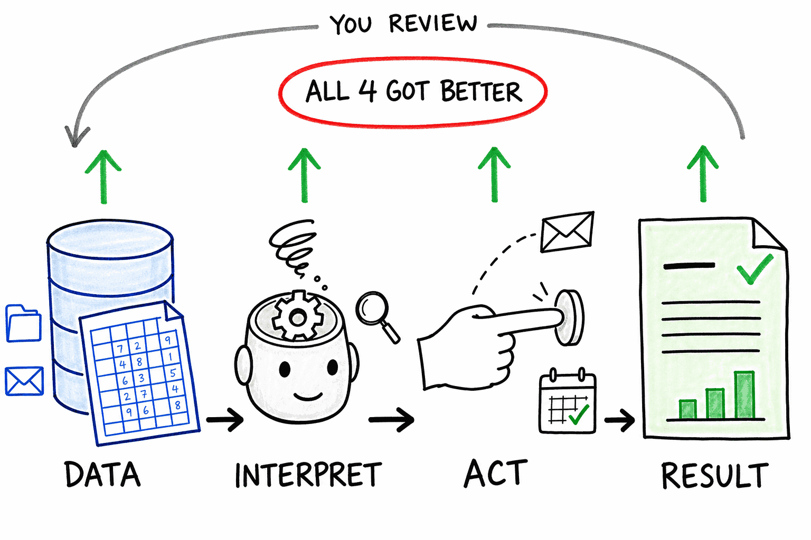
Todo funciona igual, y aquí está el salto
Cualquier IA, app o SaaS hace lo mismo: accede a datos, los interpreta, ejecuta una acción y produce un resultado. Ese ciclo siempre existió. Lo que cambia con la IA es cada etapa: conectarse a los datos ahora es fácil (antes eran integraciones a medida), interpretar y actuar dieron un salto enorme (entiende lenguaje, documentos y contexto, no solo números), y el resultado puede ser mucho más impactante: no una tabla en bruto sino un informe, una presentación, una decisión lista para revisar.
El ciclo es el de siempre; pero la IA aumentó drásticamente cada etapa, y por eso el salto ha sido "cuántico".
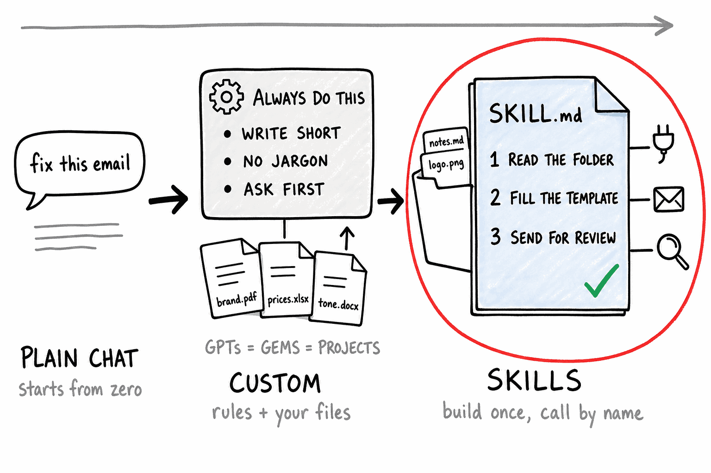
De chat suelto a skills
Chat simple → instrucciones custom (Custom GPTs, Gems y Projects son lo mismo con distinto nombre) → carpetas como contexto (la IA trabaja sobre TUS archivos, no desde cero) → skills: instrucciones MÁS herramientas, empaquetadas para reusar.
Un skill se construye una vez y se ejecuta cuantas veces sea necesario, incluso de manera programada.
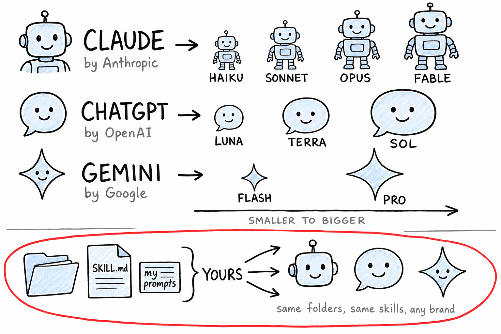
El mapa de los modelos
Tres empresas, tres marcas, y dentro de cada marca una escalera de modelos: los pequeños son rápidos y ligeros, los grandes son más capaces. Lo que aprendes hoy sirve en cualquiera: carpetas, archivos MD, skills y conectores migran contigo si algún día cambias de proveedor.
No te casas con un proveedor: construyes formas de trabajar portables.
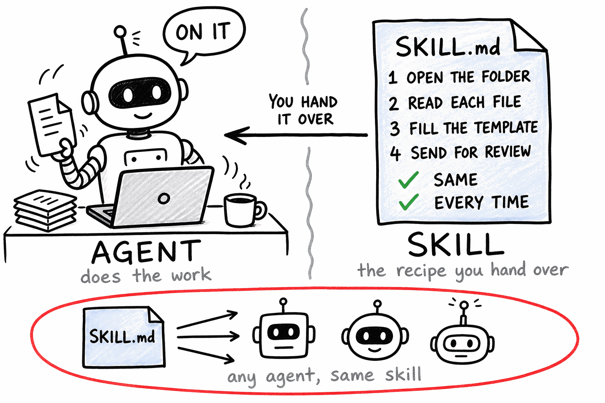
Agente vs skill
El agente es quien trabaja; el skill es la receta que le entregas para que ese trabajo salga igual de bien todas las veces.
Los skills son tuyos: se los das a cualquier agente.
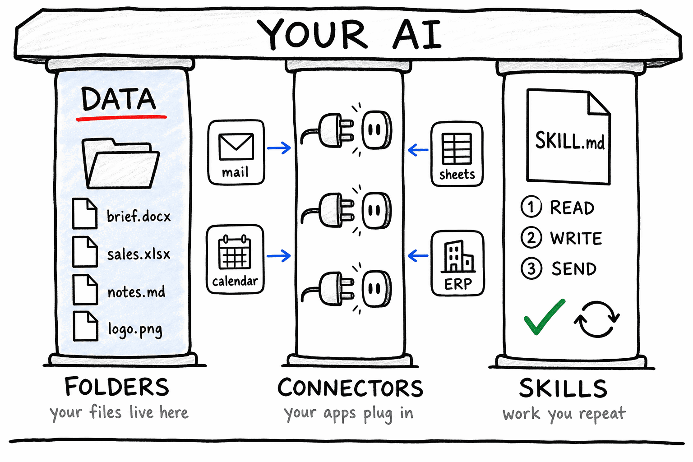
Los tres pilares
Carpetas: aquí VIVEN tus datos y tu contexto: los archivos con los que trabajas y lo que la IA va produciendo; retomas trabajo anterior en vez de partir de cero. Conectores: por aquí ENTRAN los datos que viven en otras apps (correo, calendario, planillas, tu ERP): cada app publica sus datos y el conector se los trae a tu IA. Skills: trabajo repetible, capturado una vez y mejorado con el tiempo.
Estos tres son la estructura: dónde vive tu material, por dónde entran los datos al sistema y qué trabajo se ejecuta sobre los datos.
02
Tipos de archivo
Todos los formatos funcionan de la misma manera.
.TXT

Todos los formatos funcionan de la misma manera
Bytes, procesador, y cómo se ven en pantalla.
Algunos son más fáciles de procesar, algunos se visualizan mejor y otros son más fáciles de entender para la IA.
.CSV

.csv: una tabla como texto plano
Una fila por línea, columnas separadas por comas. Excel la abre como tabla y la IA la lee directo, sin adornos.
El formato más fácil para pasarle datos tabulares a la IA.
.DOCX
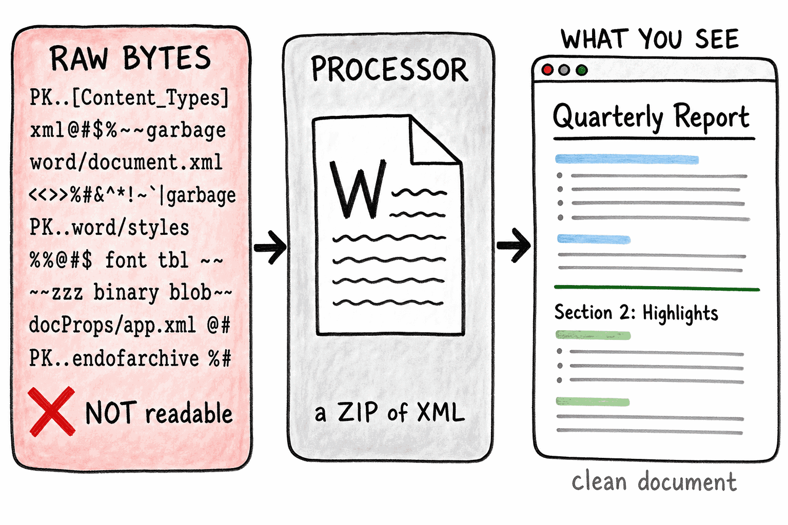
.docx: un paquete disfrazado
Bytes ilegibles, un procesador (Word) que los interpreta, y el documento limpio que ves. Por dentro es un ZIP de XML: texto, estilos e imágenes por separado.
Abrirlo sin Word es basura; la vista limpia depende del procesador.
.XLSX

.xlsx: el mismo truco, para planillas
Mismos tres pasos: los bytes, un procesador (Excel), y la planilla que ves. Por dentro, un ZIP con las hojas, las fórmulas y los formatos.
Tu planilla es más "desarmable" de lo que parece, y la IA sabe desarmarla.
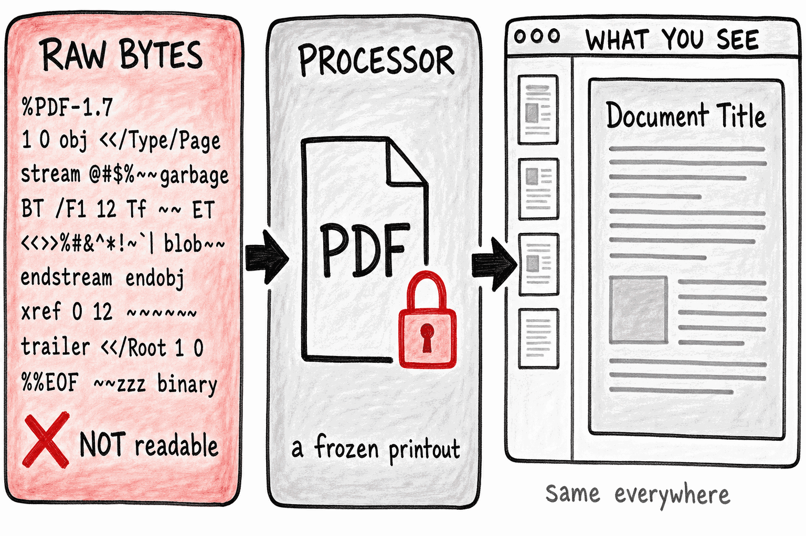
.pdf: una foto para imprimir
Hecho para verse igual en todas partes. Perfecto para humanos, difícil de leer de vuelta para el software: los datos quedan congelados en la foto.
Por eso sacar datos de un PDF cuesta más que de un Excel o un CSV.
.HTML
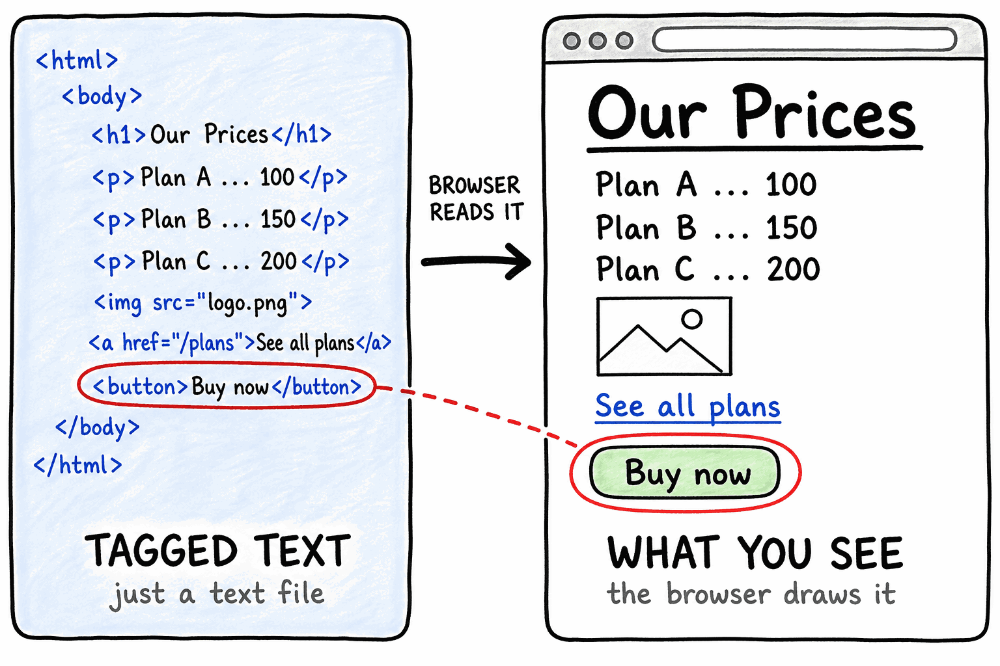
.html: la página que tu navegador dibuja
Texto con etiquetas que el navegador convierte en lo que ves: títulos, cajas, colores, botones.
Toda página web es un archivo de texto que algo dibujó.
ARTIFACT

Un Artefacto (artifact) es un .html que Claude construye y mantiene
Dashboards, calculadoras, reportes interactivos: páginas .html que Claude arma para ti y viven dentro de Cowork, siempre actualizadas.
Cuando veas "Artifact", piensa: una página web hecha a mi medida.
.JSON

.json: el formato en el que viajan los datos entre apps
El formato que las máquinas comúnmente usan para pasar información estructurada entre sí. Cuando un conector traiga datos de otra app, probablemente vendrán así.
Cada valor viaja con su etiqueta y su tipo, y por eso el software no tiene que adivinar.
.PY
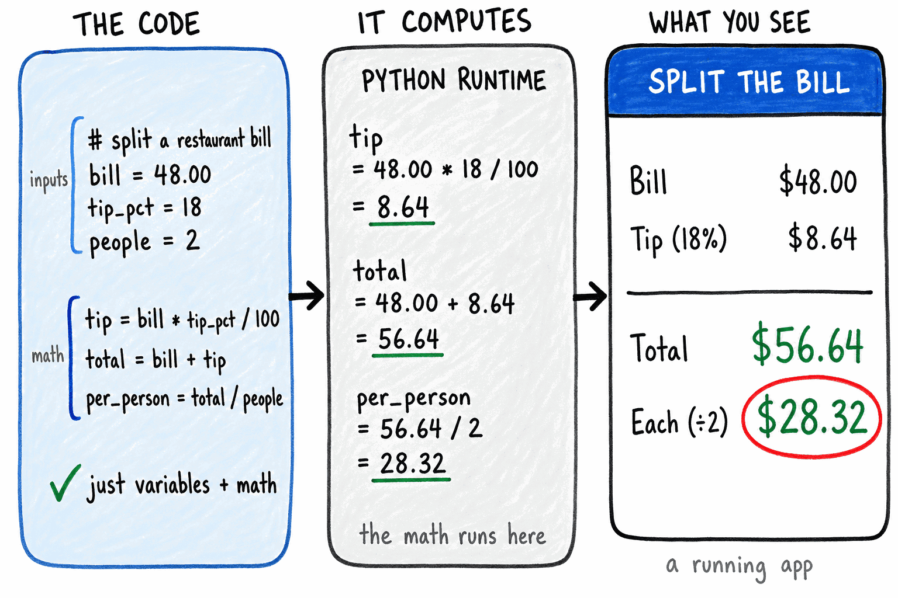
.py: texto plano que se ejecuta
Toma entradas, calcula y muestra un resultado. Tú no vas a programar: la IA escribe y ejecuta este código por ti cuando la tarea lo necesita.
Si ves que Claude "escribió un script", probablemente es un archivo .py que ejecuta un "compilador".
03
La familia MD
El idioma de las instrucciones.
.MD
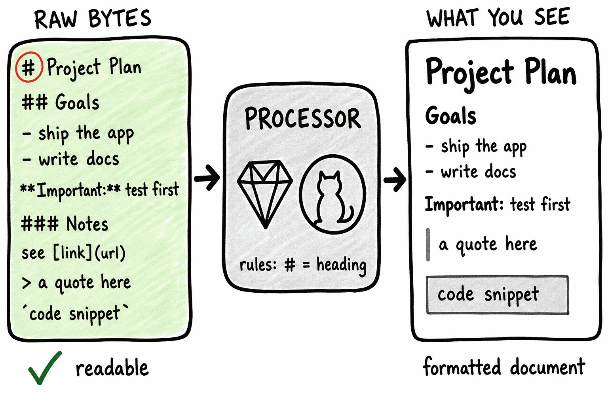
MD: el idioma de las instrucciones
Texto plano con formato liviano: símbolos simples (# para títulos, - para listas) que cualquier herramienta muestra bien. Es el formato que la IA prefiere para leer y escribir instrucciones.
El formato .md es el que la IA lee más fácil, muchas veces lo utiliza como "intermedio" para leer o presentar archivos.
.MD
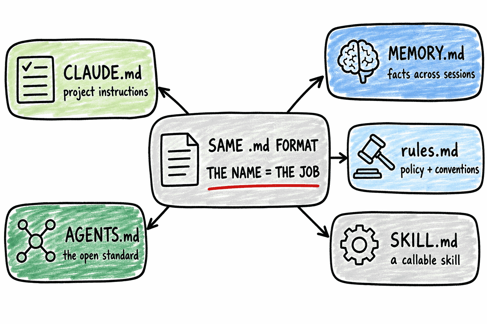
Un formato, muchos roles
El mismo tipo de archivo cumple trabajos distintos según su nombre: instrucciones permanentes, memoria entre sesiones, reglas duras, recetas de trabajo.
Aprendes UN formato y con eso manejas todas las piezas de tu agente.
CLAUDE.md

CLAUDE.md y AGENTS.md: el mismo archivo
Las instrucciones permanentes de una carpeta o proyecto: reglas y contexto que la IA carga en cada sesión. CLAUDE.md es el nombre que lee Claude; AGENTS.md es el nombre agnóstico que leen otras herramientas. Si necesitas ambos, se enlaza uno al otro: un solo archivo real, dos nombres.
Nunca dos copias: un archivo real y un enlace, así nunca se desincronizan.
SKILL.md
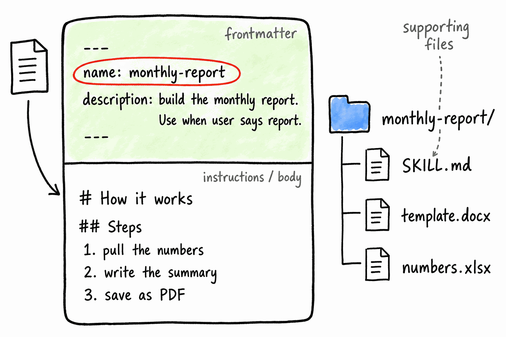
SKILL.md: la receta del trabajo repetible
Un skill es un archivo de instrucciones con nombre propio. Lo construyes una vez y después lo llamas por su nombre cada vez que toque ese trabajo.
Esto es lo que vamos a construir juntos en la segunda hora.
SKILL.md
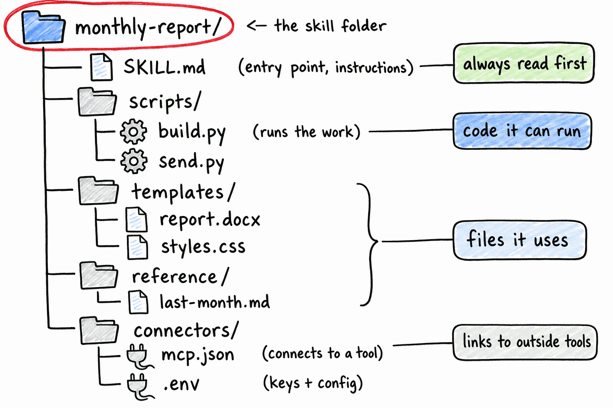
...más la carpeta que lo rodea
El skill es la receta más lo que necesita para trabajar: plantillas, ejemplos, archivos de apoyo. Todo junto en una carpeta con el nombre del skill.
Un skill se puede copiar, compartir y versionar como cualquier carpeta.
04
Prompting
No tienes que aprender prompting.
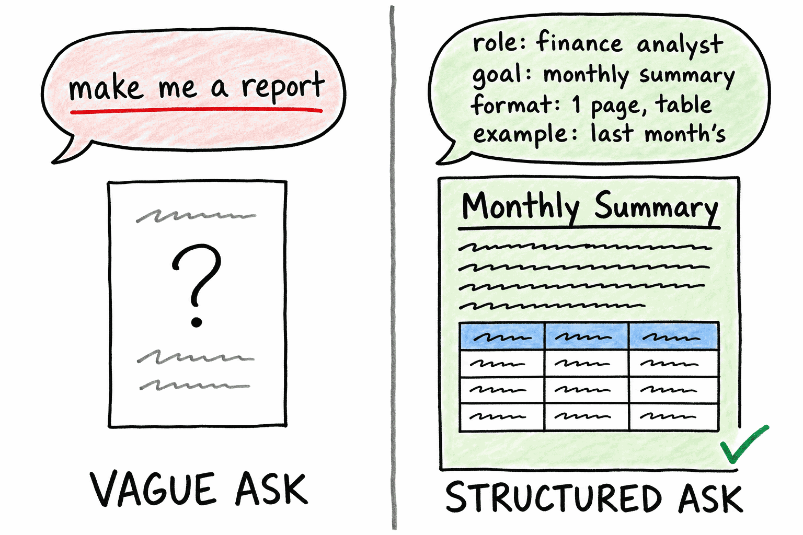
La misma tarea, diferente forma de pedirla → resultados completamente diferentes
Un prompt suelto da una respuesta vaga. Uno estructurado (rol, objetivo, ejemplo) da una respuesta completa.
La calidad de la respuesta se decide antes de enviar.
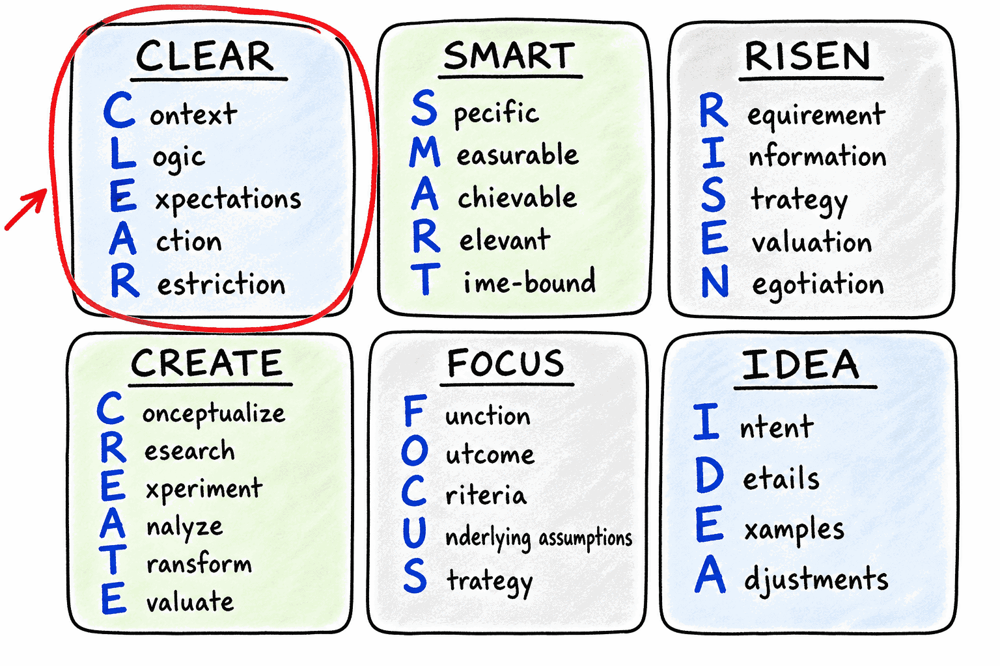
Hay decenas de fórmulas para escribir prompts
Cada una es una receta con sus siglas: CLEAR (contexto, lógica, expectativas, acción, restricción) sirve para pedidos detallados; SMART, la que ya conoces de gestión, para resultados medibles; RISEN para tareas estratégicas; CREATE para explorar ideas; FOCUS para ir al grano; IDEA para iterar y refinar. Todas apuntan a lo mismo: decir con claridad qué quieres, con qué material y bajo qué restricciones.
Antes había que aprender esto, pero ahora no es necesario...
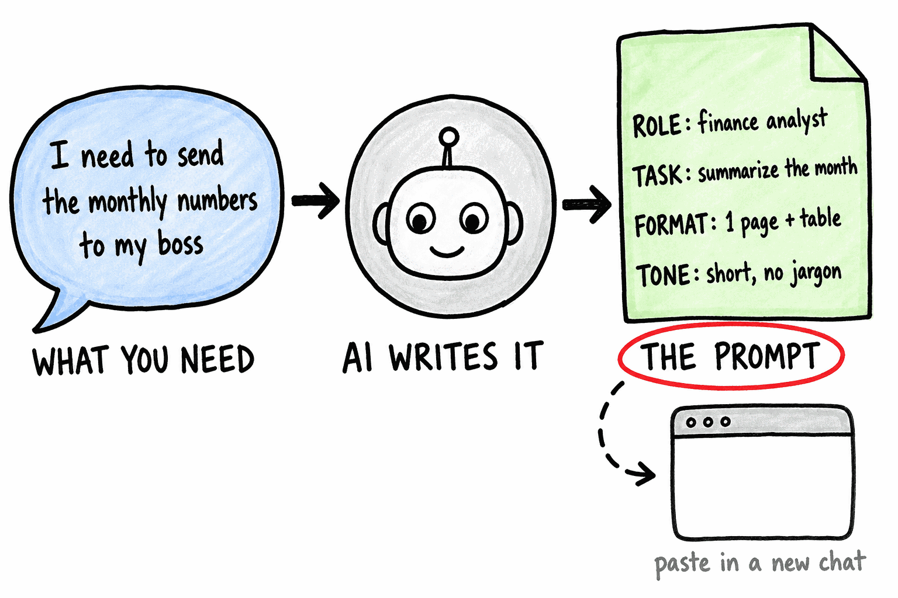
Que la IA escriba tu prompt
No memorices frameworks: dile a la IA qué necesitas y para qué, y pídele que escriba el prompt. Luego lo pegas en una conversación nueva.
Este es el primer ejercicio de la parte práctica.
05
Tokens y contexto
Todo lo que entra y sale se mide en tokens.
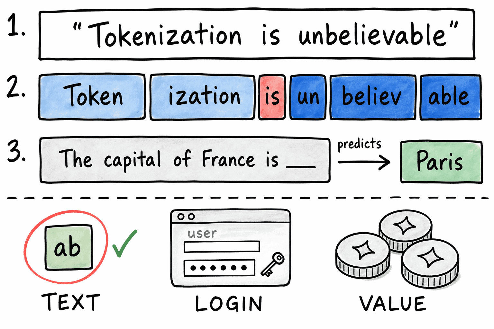
Un token es un pedazo de texto
Escribes una frase, el modelo la corta en piezas: las palabras cortas quedan enteras, las largas se parten (aproximadamente 4 caracteres por pieza). Después lee esas piezas en orden y predice la siguiente. Todo lo que envías y todo lo que recibes se mide en esas piezas, incluso dentro de un plan con uso incluido."Token" es una palabra sobreusada y por eso confunde: el token de IA es un pedazo de texto (este); el token de autenticación es una clave secreta que prueba quién eres al entrar a un sistema; el token de cripto o de arcade es una unidad de valor o una ficha física. Misma palabra, tres mundos distintos.
Aquí un token es siempre un pedazo de texto, y todo lo que entra y sale se mide en eso.Demo en vivo: platform.openai.com/tokenizer
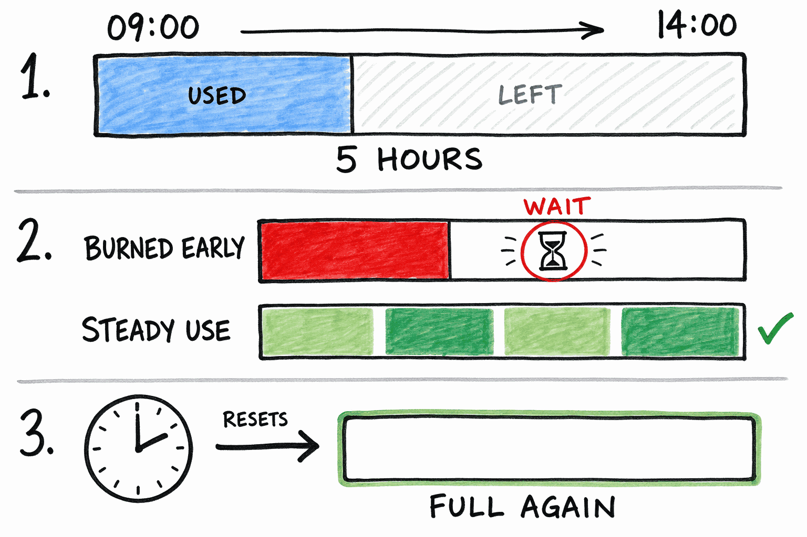
El uso viene en ventanas de tiempo
Tu plan no es ilimitado ni se cobra por mensaje: incluye una cuota que se renueva cada cierto número de horas. Si la quemas de golpe al empezar el día, te toca esperar a que la ventana se renueve. Con uso repartido, te alcanza sin que lo pienses. Y si tocas el límite esta semana, no es una falla tuya: es exactamente el material que vamos a optimizar en la Sesión 2.
Tu consumo se mide en tokens, y esos tokens vienen por ventanas.
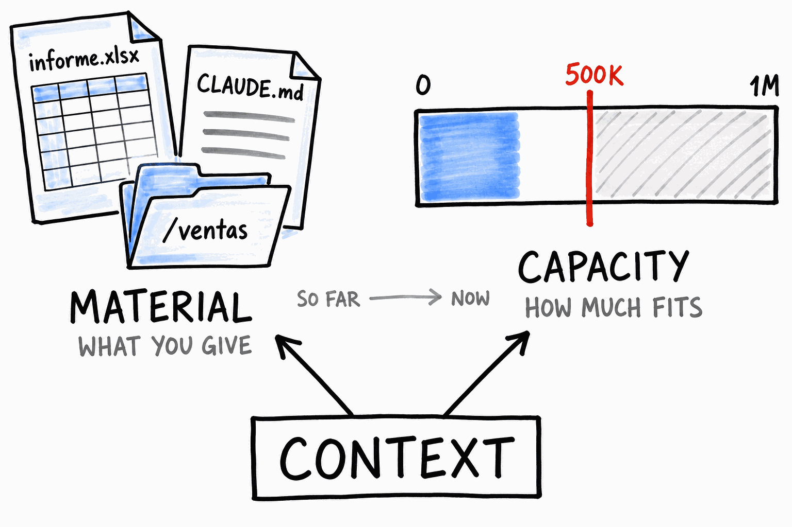
La misma palabra, dos sentidos
Hasta aquí usamos "contexto" para hablar del material que le das: los archivos, las carpetas, el CLAUDE.md, todo lo que le pasas para que entienda tu trabajo. Ese sentido no cambia. Pero hay un segundo sentido que todavía no hemos tocado: la capacidad, cuánto le cabe a una conversación antes de que empiece a fallar. Es la misma palabra vista desde otro ángulo: uno habla de qué le das, el otro de cuánto aguanta.
Contexto es material y también es capacidad. Lo que sigue es la capacidad.

La ventana de contexto, y sus dos caras
Cada conversación tiene un tamaño máximo. Opus maneja un millón de tokens, que es enorme. Pero el número no es la meta: yo corto alrededor de los 500 mil, porque aunque la ventana lo soporte, la conversación se puede degradar antes de llenarse. Empieza a perder detalles, a repetirse, a olvidar lo que dijiste al principio.La segunda cara es que el contexto se acumula. Cada mensaje reenvía todo lo anterior, así que una conversación larga cuesta más en cada turno que en el anterior, y los mensajes largos aceleran eso. Dos consecuencias distintas de lo mismo: una afecta la calidad de la respuesta, la otra afecta tu consumo. En la Sesión 2 vemos cómo optimizarlo; por ahora basta con saber que las conversaciones eternas te cobran por los dos lados.
Una tarea por conversación, y ciérrala antes de que se ponga pesada.
06
Sesión 2
La segunda mitad: cómo conducirlo, criterio y qué pasa por debajo.
07
Cómo conducirlo
Primero cómo se maneja, después cuánto consume.
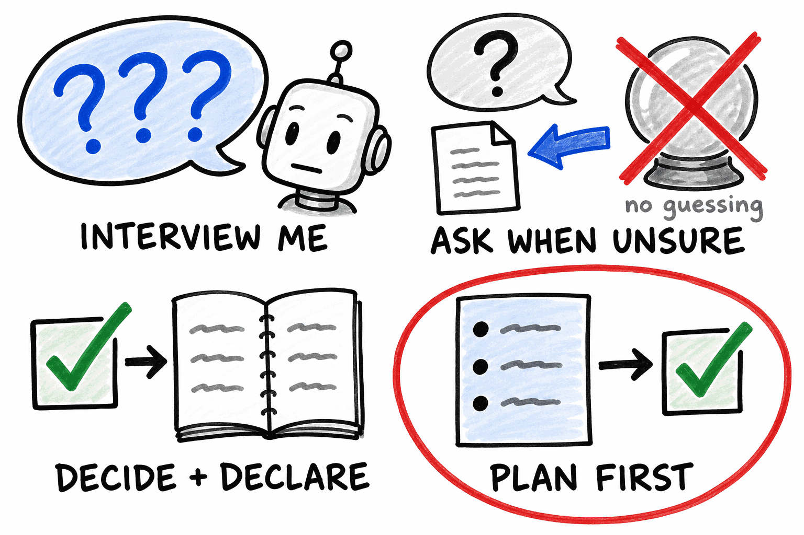
Cuatro formas de manejarlo mejor
Estas cuatro frases cambian el resultado más que cualquier truco de prompt: 1) "entrevístame antes de escribir esto" (de una idea vaga sale un buen brief); 2) "si algo no lo entiendes, para y pregúntame" (deja de adivinar); 3) "toma tú las decisiones técnicas y dime qué decidiste y por qué" (no necesitas saber de tecnología, solo ver la decisión); 4) "primero hazme el plan, no ejecutes nada todavía" (Cowork no tiene modo plan, pero pedirlo funciona igual).
Pedirle que pregunte y que planee antes de actuar te ahorra la mitad de las correcciones.
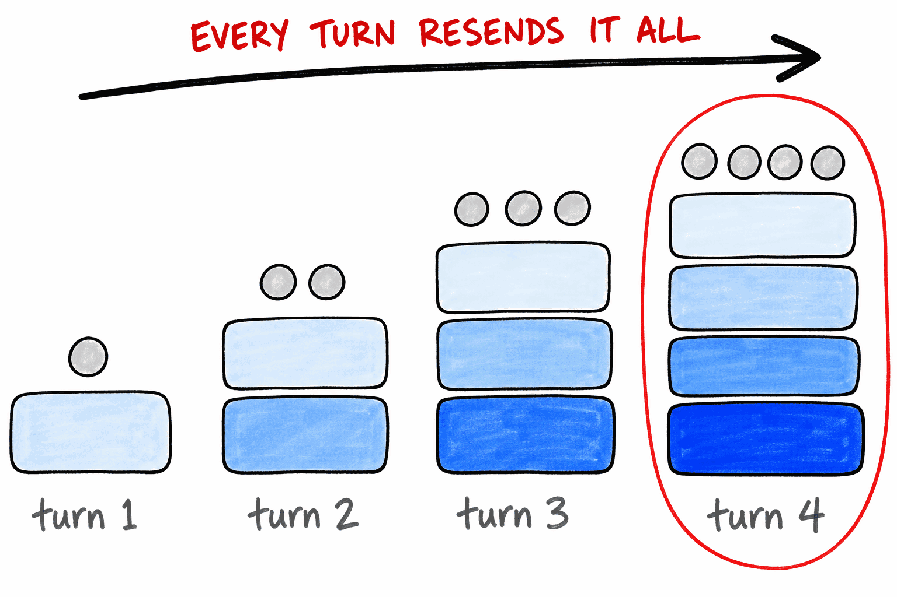
Cada turno reenvía todo
En cada mensaje nuevo, la conversación completa viaja de nuevo al modelo. Mientras más larga, más consumo por cada turno siguiente.
Conversaciones largas no solo pierden calidad: gastan más.
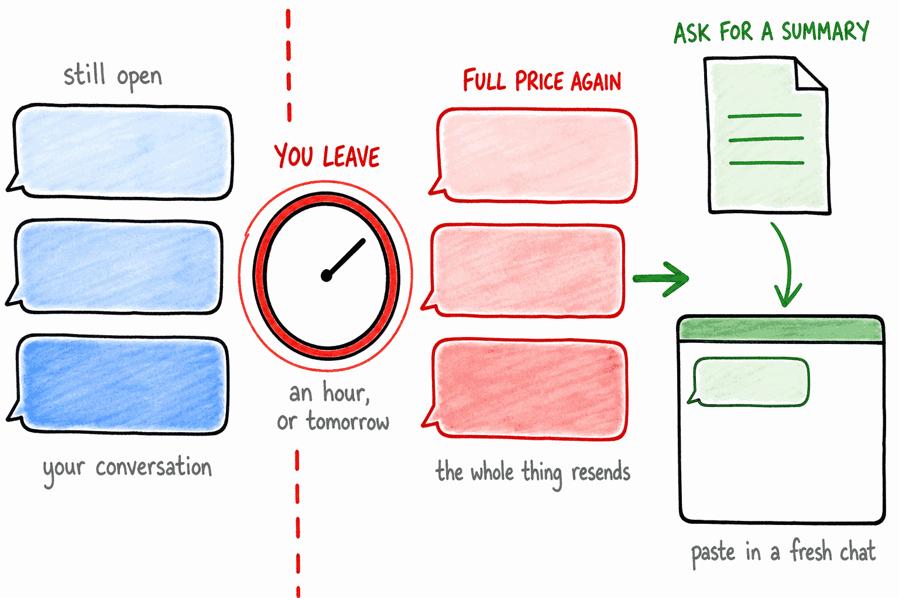
Si te fuiste, no retomes el mismo chat
Dejaste la conversación abierta, saliste a una reunión o la retomas al día siguiente. En esa pausa se vence lo que estaba guardado en caché, así que tu primer mensaje al volver reenvía toda la conversación a precio lleno y te quema cuota más rápido. La salida es simple: antes de irte, o apenas vuelvas, pide un resumen de lo avanzado y sigue en una conversación nueva con ese resumen como punto de partida.
Volver a una conversación vieja es caro. Volver a un resumen es más eficiente, y te permite retomar mejor.
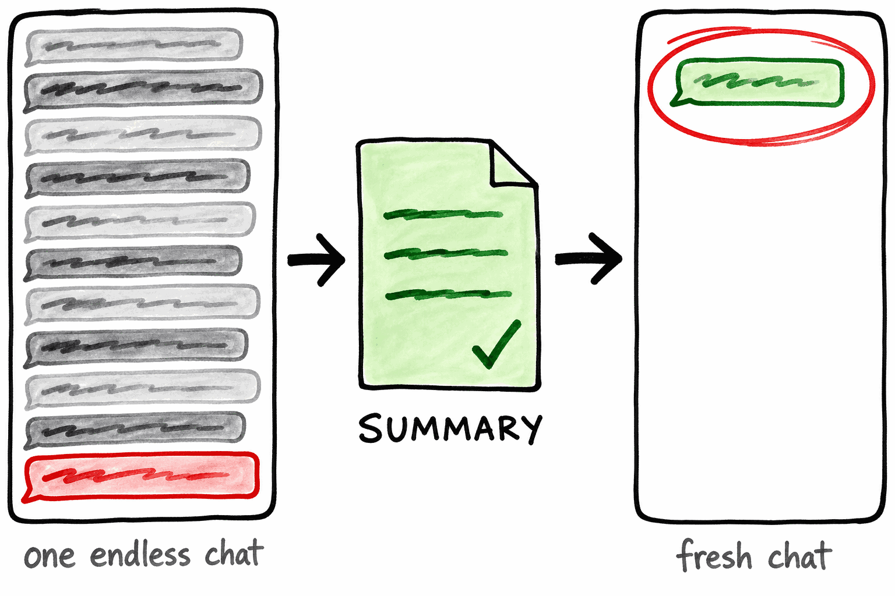
Cowork no compacta
Cowork no resume la conversación por ti cuando se llena: la calidad simplemente cae. El ritual: pide un resumen de lo avanzado, abre una conversación nueva y pega el resumen como punto de partida.
Puedes pedir que el resumen se guarde en un archivo o puedes pedirle un prompt con el resumen para retomar.
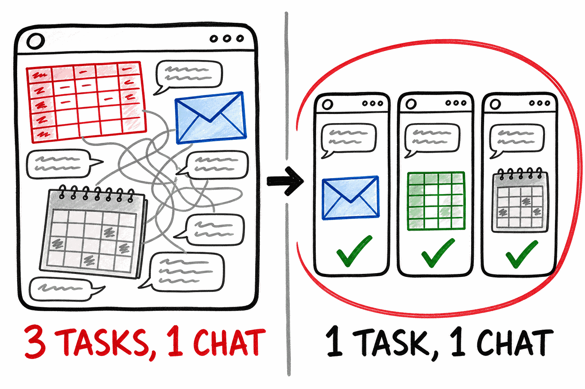
Una tarea por conversación
Mezclar tareas en un chat contamina el contexto de todas. Separarlas mantiene cada conversación liviana, nítida y barata.
Nueva tarea, nueva conversación
08
Criterio y seguridad
Dónde tienes que estar tú.
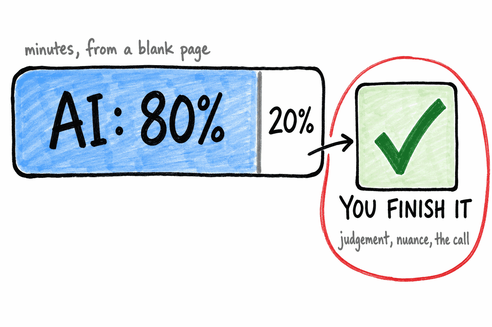
Apunta al 80, tú cierras
Cuando estás creando algo puntual (un informe, un correo, una propuesta), la IA te deja en el 80% en minutos. Ese último 20% (criterio, matices, la decisión final) es tuyo, y ahí está tu valor.
La IA potencia tus habilidades, no te reemplaza
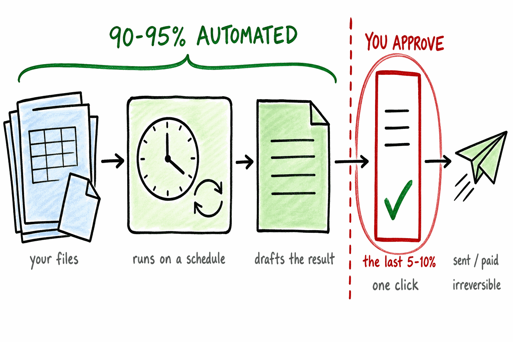
Automatiza la cadena, deja la compuerta
Cuando el trabajo se repite, casi todo puede correr solo: leer los archivos, procesarlos, redactar el resultado. Eso es un 90-95% del trabajo. Lo que queda afuera no es "el resto", es un punto: la aprobación antes del paso que no se puede deshacer (enviar, publicar, pagar).
El concepto "Human in the Loop" (HITL): debes permanecer en el loop, o cadena, para tomar las decisiones importantes.
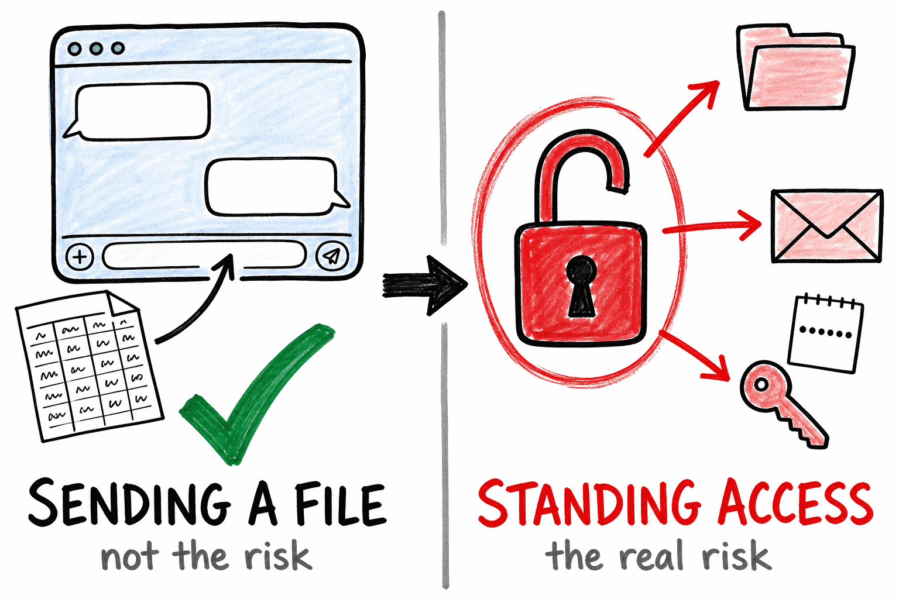
La conversación no es el riesgo; el acceso sí
Enviar un Excel a Claude no lo publica en ningún lado. El riesgo real es el acceso mal manejado: claves guardadas en lugares abiertos, carpetas o herramientas compartidas sin control.
La disciplina es administrar el acceso, no evitar la herramienta.
09
APIs y MCP
Qué pasa por debajo cuando aprietas conectar.
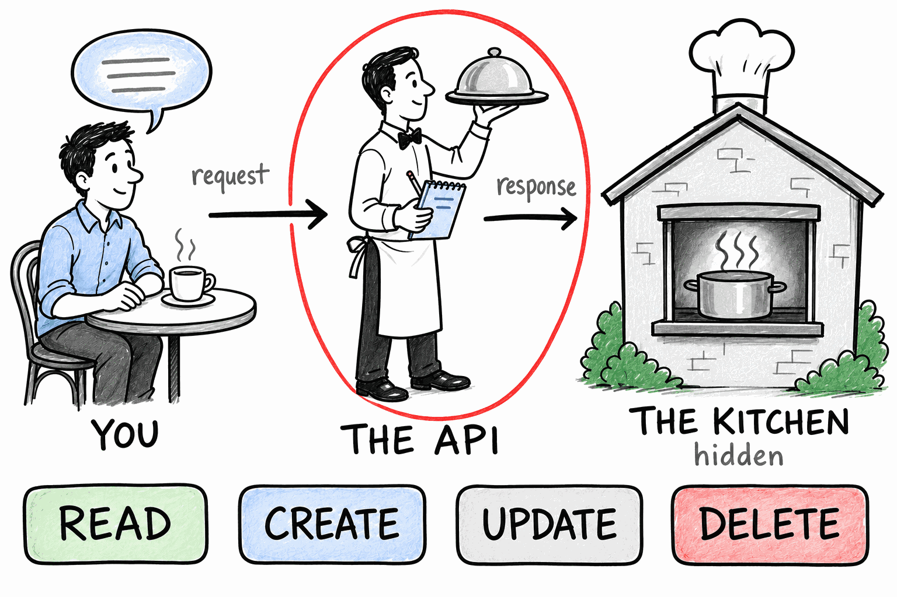
La API es el mesero
Tú pides del menú, el mesero lleva el pedido a la cocina y te trae el plato. Nunca entras a la cocina. Así habla un software con otro: pedidos definidos, respuestas definidas, y el interior queda oculto.
Y hay solo cuatro tipos de pedido: leer, crear, actualizar, borrar.
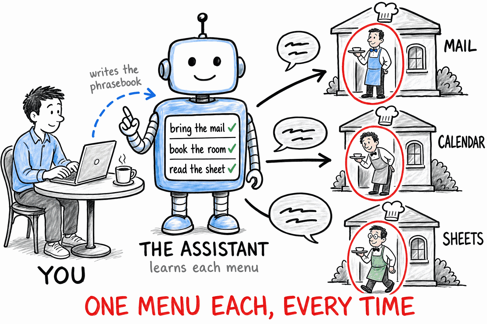
El asistente aprende, pero el mesero sigue siendo de cada cocina
Un asistente que entiende de APIs te ahorra escribir el manual: aprende el menú de cada restaurante y te arma la conexión mucho más rápido. Lo que no cambia es que cada restaurante sigue teniendo su propio mesero, con su propio idioma. Aprender uno no te sirve para el siguiente.
Más rápido de escribir, pero sigues aprendiendo un menú por cocina.
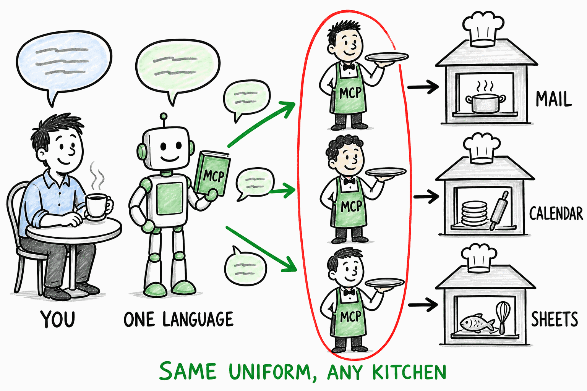
El mismo uniforme en todas las cocinas
MCP no eliminó a los intermediarios ni fusionó las herramientas: cada herramienta sigue publicando su propia entrada. Lo que cambió es que ahora todas la publican igual. Son los mismos tres meseros de la diapositiva anterior, con el mismo uniforme y hablando un solo idioma; las cocinas por dentro siguen siendo completamente distintas. Por eso el asistente aprende un idioma en vez de tres, y puede entrar incluso a una cocina que no existía cuando lo construyeron.
Cuando en Cowork aprietas "conectar", esto es lo que pasa por debajo. Es lo que hicieron con Composio en la Sesión 1.
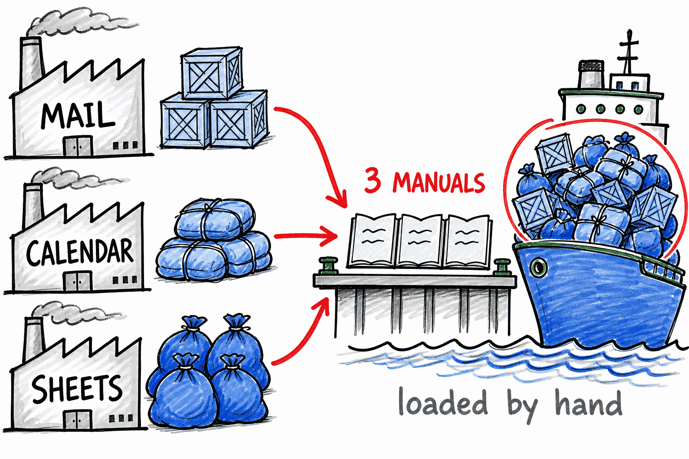
Antes del contenedor
Cada fábrica empacaba a su manera: cajones, bultos, sacos. Cada puerto tenía que aprender el manual de cada fábrica y todo se cargaba a mano, pieza por pieza. Lento, caro y distinto en cada lugar.
Sin caja estándar, cada conexión es artesanal.
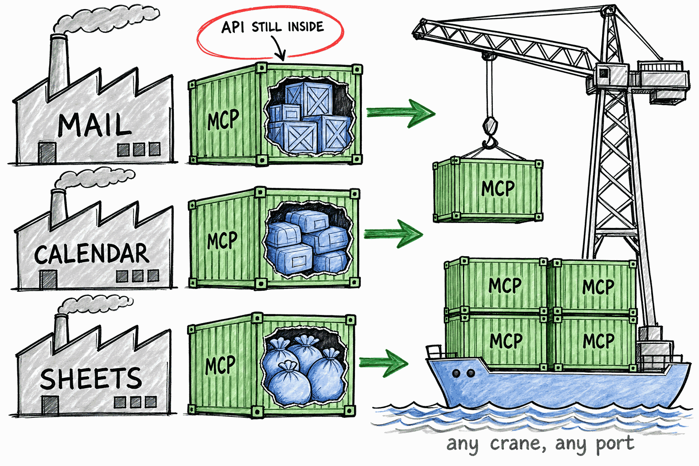
El contenedor no reemplazó la carga, la envolvió
Una sola caja estándar y cualquier grúa, cualquier barco y cualquier puerto pueden manejarla. La carga de adentro no cambió: sigue siendo la misma. La API tampoco desapareció, quedó envuelta en algo estándar.
La fábrica empaca una vez y el mundo entero sabe manejarlo.